"MEMBRO DO EPISCOPADO POLONÊS"
Em 28 de Setembro de 1958 foi
consagrado por Dom Baziak, Bispo Auxiliar de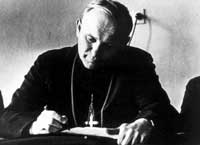
Cracóvia, convertendo-se no membro mais jovem do Episcopado Polonês.
Em 1960, Karol publicou livros
de poesia sob o pseudônimo Andrzej Jawien, e também escreveu assinando o mesmo
nome, uma peça de teatro, “A Loja do
Ourives”. Em 1979, com o objetivo de divulgar os ensinamentos
cristãos para a sociedade, escreveu o livro
“Amor Frutuoso e Responsável” e logo depois “Sinal de Contradição”, assinando
o seu nome verdadeiro.
Em 13 de janeiro de 1962 com o
falecimento de Dom Baziak, o futuro Papa agora Bispo Dom Wojtyla foi elevado à
sede como titular do Episcopado de Cracóvia.
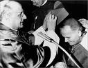
Na noite do dia 13 de Agosto de 1961 as autoridades comunistas
construíram o Muro de Berlim, para bloquear o êxito contínuo de alemães orientais,
que fugiam em busca de liberdade. Moscou chamou à ordem os países satélites e,
mesmo na Polônia católica, foi retomada a campanha ateísta. Karol e as
autoridades religiosas de um modo geral sofreram uma abominável
e impiedosa perseguição.
No período de 11 de Outubro de
1962 a oito de Dezembro de 1965, participou ativamente do Concílio Vaticano II,
como Bispo e depois como Arcebispo, especialmente nas comissões responsáveis
para elaborar a Constituição Dogmática sobre a Igreja “Lúmen Gentium”, a Constituição Pastoral da
Igreja no Mundo Moderno “Gaudium
et Spes” e a redação de diversos documentos, entre eles,
a Declaração sobre a Liberdade Religiosa
“Dignitatis Humanae”. Durante estes anos,
combinava de modo admirável a produção teológica com um intenso trabalho
apostólico, especialmente com os jovens, com quem partilhava momentos de
reflexão e de oração. Karol Wojtyla também se evidenciava buscando enaltecer o
ser humano, instituindo e estimulando a integração dos leigos nas tarefas
pastorais, a promoção do apostolado juvenil e vocacional, a construção de
templos apesar da forte oposição do regime comunista, a promoção humana e a
formação religiosa dos operários, com incentivo ao pensamento e as publicações
católicas.
Wojtyla de um modo geral mantinha-se
sério e silencioso, reservando espaço aos seus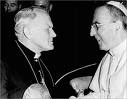
pensamentos e
orações. Também era muito meticuloso no preparo das homilias, que escrevia
primeiro em polonês e depois fazia a correção com muita atenção, até encontrar
as melhores palavras, antes de passá-la para o italiano ou outro idioma. No
livro “UMA VIDA COM KAROL”
, o Cardeal Stanislaw Dziwisz, que foi o seu secretário
particular por mais de 30 anos, escreveu:
“Conheci as suas notáveis intuições pastorais, seus projetos eclesiásticos, e, sobretudo,
sua profunda espiritualidade, começando pelo modo como celebrava a Santa Missa.
Jamais iniciou uma Celebração que não fosse precedida por um longo silêncio.
Preparava-se interiormente da melhor maneira e, ao terminar, sempre fazia um
agradecimento de 15 minutos, ajoelhado e com grande recolhimento”.
Em 13 de Janeiro de 1964 é
escolhido pelo Papa Paulo VI para Arcebispo de Cracóvia.
Karol, como Arcebispo de
Cracóvia, estava sempre junto de Wyszynski, em todas as celebrações do Milênio,
aniversário de batismo da Polônia e da fundação do Estado Nacional Polonês.
Mantinha-se sempre num segundo plano mostrando um sinal eloquente de profundo
respeito ao Cardeal Wyszynski que era o Primaz da Polônia, atestando também com este
gesto, que entre eles não havia nenhuma discórdia e muito menos qualquer
divisão, que o serviço secreto comunista procurava inventar e espalhar, para
difamar e criticar as autoridades religiosas.
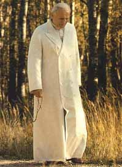
No dia 29 de
Maio de 1967, aos 47 anos de idade, o Arcebispo Wojtyla foi criado Cardeal pelo Papa Paulo VI. Também, nesta mesma data ele decidiu não participar do
sínodo convocado pelo Papa, como forma de protesto contra as autoridades polonesas
que negaram a conceder o passaporte ao Cardeal Wyszynski, a fim de não permitir que
ele participasse do mesmo evento.
Cardeal pelo Papa Paulo VI. Também, nesta mesma data ele decidiu não participar do
sínodo convocado pelo Papa, como forma de protesto contra as autoridades polonesas
que negaram a conceder o passaporte ao Cardeal Wyszynski, a fim de não permitir que
ele participasse do mesmo evento.
Em 1974, o novo Cardeal Wojtyla ordenou 43 novos
sacerdotes, que foi a ordenação sacerdotal mais numerosa ocorrida na Polônia,
desde que terminou a Segunda Guerra Mundial.
De 30 de
Setembro a 6 de Novembro de 1971, teve intervenção destacada no segundo sínodo
consagrado ao sacerdócio ministerial e à justiça no mundo. Abordando com
discernimento e sabedoria o melindroso assunto relacionado ao celibato dos
sacerdotes, oportunidade em que se mostrou inflexível e hostil perante os
modernistas holandeses que queriam e insistiam na eliminação do celibato.
Wojtyla, ao contrário, defendeu veementemente a “co-naturalidade entre o celibato e o sacerdócio”,
determinando sobre a necessidade dos padres não se casarem.
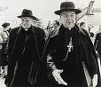
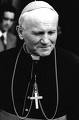
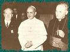
Em 1974, no
terceiro sínodo consagrado à evangelização, interveio de forma crítica e
transparente em relação à teologia da libertação, lembrando que o marxismo não
deixa nenhuma alternativa de existência para a Igreja. Karol rejeitou a teologia
da libertação afirmando: “Onde existe
o comunismo ateu não há campo para a religião”.
Em 1976, o
Papa Paulo VI o escolheu para pregar a Quaresma no Vaticano.
Em 1978 morreu o Papa Paulo VI
e é eleito o novo Papa, Cardeal Albino Luciani de 65 anos que escolheu o nome de
João Paulo I.
Logo nos primeiros dias, foi denominado o
"Papa do Sorriso", por sua simpatia pessoal e
seu aspecto sempre amável e paternal. Entretanto, faleceu aos 33 dias após a sua
nomeação.
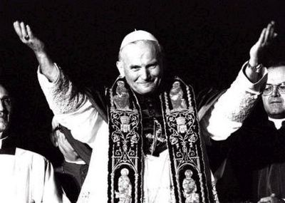
Em 16 de
outubro de 1978, em novo Conclave, o Cardeal polonês Karol Wojtyla é eleito como
o sucessor de São Pedro, quebrando a tradição de mais de 400 anos que sempre escolhia um
Papa de origem italiana. No dia 17 de Outubro concelebrou a primeira Santa Missa na Capela
Sistina, no Vaticano, e no dia 22 de outubro de 1978, foi investido como Sumo
Pontífice e assumiu o nome de João Paulo II. Desde o principio, colocou-se ao lado
da paz e da concórdia internacional, realizando intervenções frequentes em defesa
dos direitos humanos e das nações.
Foi um Papa que
teve ação decisiva no século XX: as suas viagens ultrapassaram em número e
extensão as de todos os Papas antecessores juntos, reunindo sempre multidões
para ouvir as suas mensagens e homilias; para muitos o Papa Wojtyla tinha o mesmo
carisma do Papa João XXIII (sabia cativar as pessoas com o seu modo simples e
sincero, dava o exemplo de fidelidade e era íntegro e direto na defesa dos bons
costumes, na divulgação da Verdade Cristã, da Lei Divina e na determinação
insistente de preservação da família, que é um testemunho do Amor de Deus).
Participou em dezenas de eventos ecumênicos (foi o primeiro a pregar numa Igreja
Luterana e numa Mesquita Muçulmana, e o primeiro a visitar o Muro das
Lamentações (costume judaico) em Jerusalém; e também, realizou numerosas
beatificações e canonizações, além de ter escrito muitas encíclicas e diversos
documentos pontifícios.
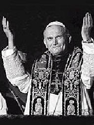
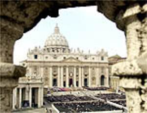
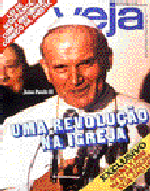
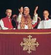

 Próxima Página
Próxima Página
Página Anterior
Retorna ao Índice